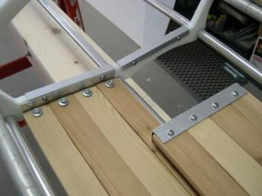
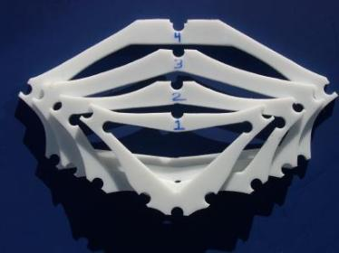

| Frame Construction | Menu Next Page |
|

 |
The frame construction portion of the manual was written to provide homebuilders with an uncomplicated method of building folding kayak frames. The stringers are made of aluminum tubing, with the cross sections constructed of High Density Polyethylene ( HDPE) plastic.
There are no mechanical connectors required between stringers and cross sections as the tubes simply snap onto the cross section via cutouts. To enhance simplicity, no frame stretcher bars are required. All stringers are made of 3/4" 6061 or 6063 grade aluminum tubing with 5/8" inserts being used to connect the breakdown stinger sections. A standard tube cutter, tube bender, hand drill, and rivet puller are used to create the stringer sections. HDPE cross sections are cut from a sheet of 1/2" HDPE using a jigsaw and standard wood cutting blades. The cutout holes are drilled using a drill press and a 3/4" Forstner bit. This manual includes numerous photos, supported by written instructions. In addition to stringer and cross section construction, there are sections on strongback, coaming, footbrace, and wood floor construction. The "Using Offset Tables" section provides instruction for creating cross section templates and transferring them to HDPE. The Sea Ranger and Sea Rider folding kayaks are used to illustrate the frame building process. Cross section offsets, coaming offsets, and various drawings are provided for construction of these and all other kayaks in the manual. All kayaks are constructed in a similar manner, with any differences being described in the instructions. Average frame building costs are $250.00 - $300.00US. Frame construction times are approximately 70hrs for the first time builder. Total construction time including the PVC skin is approximately 100hrs.
Aluminum Stringers Wood Slat Floor HDPE Cross Sections |